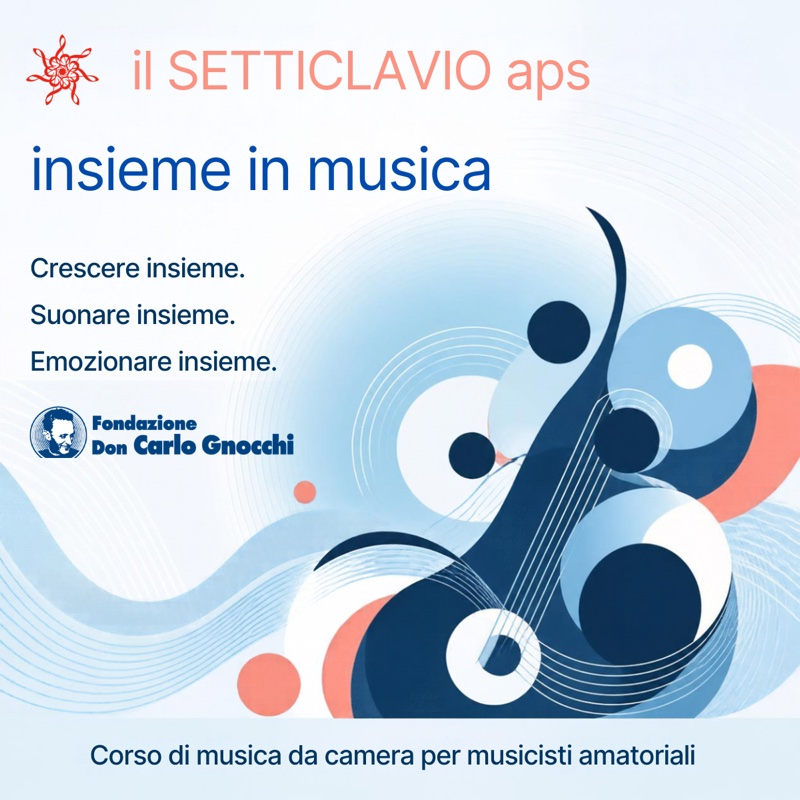

il SETTICLAVIO aps › Progetti › Insieme in Musica
Corso di musica da camera · dal 2026
Insieme in Musica
Il corso di musica da camera per musicisti amatoriali: persone con una solida formazione musicale che nella vita fanno un altro mestiere.

- Per chi
- Musicisti amatoriali con una solida formazione musicale
- Quando
- Da sabato 3 ottobre 2026
- Dove
- Istituto Palazzolo, Museo del Centro Santa Maria Nascente, Centro Girola – Milano
- Docenti
- Francesco Corti e Luca Maggioni
Il corso
Un chimico industriale e un fisico, un matematico finanziario e chi lavora in banca, alcuni insegnanti, un letterato universitario, un magistrato e uno psicoterapeuta: i dodici corsisti di Insieme in Musica hanno scelto un mestiere diverso dopo il diploma di Conservatorio, senza mai smettere di suonare. Da sabato 3 ottobre 2026 si ritrovano con il loro strumento e le loro partiture nelle sedi della Fondazione Don Carlo Gnocchi, divisi in diverse formazioni cameristiche.
Il corso è ideato da Luca Maggioni, violista e presidente dell'associazione, ed è seguito insieme al maestro Francesco Corti, direttore d'orchestra milanese con una carriera nei maggiori teatri d'Europa e del mondo, che presta la sua opera come volontario.
Il repertorio
Programmi ambiziosi, dal classicismo al primo Novecento: il Trio op. 11 di Beethoven e il Trio op. 114 di Brahms, i Phantasiestücke op. 73 e il Quintetto op. 44 di Schumann, la Sonata «Arpeggione» di Schubert, il Grand Duo Concertant op. 48 di Weber, il Trio in sol maggiore di Debussy e le Trois Aquarelles di Philippe Gaubert. Un duo vocale prepara pagine d'opera e di musica sacra, da Mozart e Rossini a Händel, D'Anzi, Franck e Schubert.
Dall'aula al concerto
I programmi preparati diventano concerti di raccolta fondi nelle rassegne Music for Life e A Tempo, nelle RSA e negli IRCCS della Fondazione Don Gnocchi: la musica nata in aula torna nei luoghi che ospitano il corso.
Domande frequenti
A chi è rivolto il corso?
A musicisti amatoriali con una solida formazione musicale – spesso con diploma di Conservatorio – che nella vita fanno un altro mestiere e vogliono suonare musica da camera in gruppo.
Chi sono i docenti?
Il maestro Francesco Corti, direttore d'orchestra, e Luca Maggioni, violista e ideatore del progetto.
Dove si svolgono le lezioni?
Nelle sedi milanesi della Fondazione Don Carlo Gnocchi: Istituto Palazzolo, Museo del Centro Santa Maria Nascente e Centro Girola.
Come si partecipa?
Scrivete all'associazione o chiamate lo 02 8719 9122 per informazioni sulle prossime formazioni.
Suoni uno strumento e vuoi partecipare?
Gli altri progetti: Tra le Onde · A Tempo · Music for Life